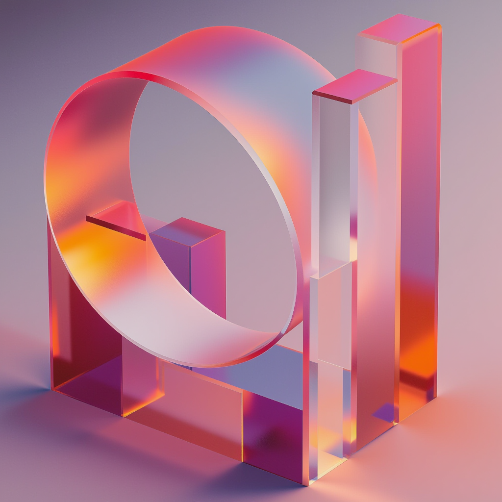
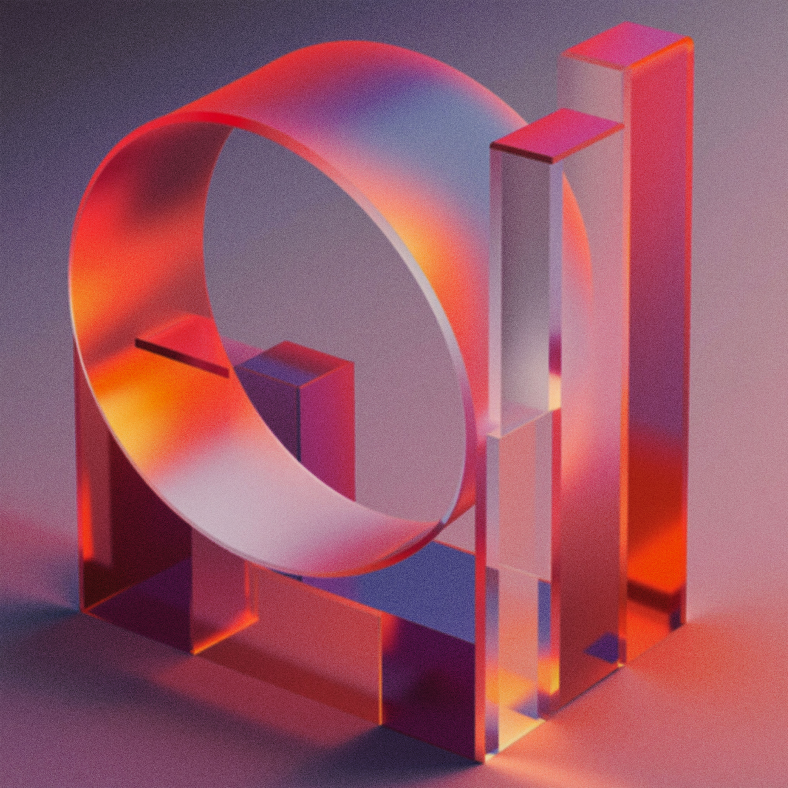

Three ways to put grain on a blurred image, plus your two files
Panels 3–5 are all built from panel 1 — the clean PNG — the same way:
blurred at σ1.2, then re-encoded to AVIF at crf 18. The only variable
between them is how the grain arrives. Panel 1 is your clean plate; panel 2
is your Photoshop version of it, for comparison.
Shown at 1:1, because grain only reads correctly at 100% — so the row below
scrolls sideways rather than scaling to fit.

1 · Source PNG, no grain · 1,007 KB
Source PNG, no grain1,007 KB
The clean plate that panels 3–5 are built from — 0.28 grain,
and genuinely 1024×1024, so this panel is true 1:1. Still 55× the
blurred AVIF of the same content: PNG is lossless, and smooth photographic
gradients are its worst case.

2 · Photoshop blur, JPEG · 2,067 KB
Photoshop blur, saved as JPEG2,067 KB
Blur added via Photoshop layer and file saved as a JPEG. Also the
grainiest panel here at 3.54 — and 4266×4266 in a 1024px slot, so
the browser is downscaling it on top of everything else. 116× panel 4
for 1.4× the grain.
3 · Baked in · 41.4 KB
Baked into the pixels41.4 KB
Grain added before encoding. The worst of both: it costs 2.3×
panel 4, and the encoder still destroys nearly all of it — only
0.50 grain survives, against 2.48 for the same bytes spent properly.
4 · Film grain synthesis · 17.8 KB
AVIF film grain synthesis17.8 KB
Encoded clean, with the grain stored as a few hundred bytes of parameters
that the decoder re-applies. 5× the grain of panel 3 at 43% of the
size. The format-level answer to this problem.
5 · feTurbulence overlay · 18.5 KB
Programmatic overlay18.5 KB
A clean 0.14-grain base, with texture drawn live by
feTurbulence for zero extra bytes. Tunable without re-exporting,
resolution-independent, and one layer can grain a whole page.
 3 · Baked in · 41.4 KB
3 · Baked in · 41.4 KB
 4 · Film grain synthesis · 17.8 KB
4 · Film grain synthesis · 17.8 KB
 5 · feTurbulence overlay · 18.5 KB
5 · feTurbulence overlay · 18.5 KB